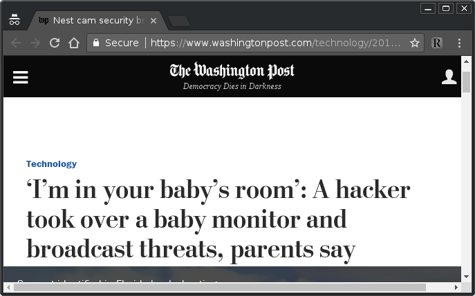
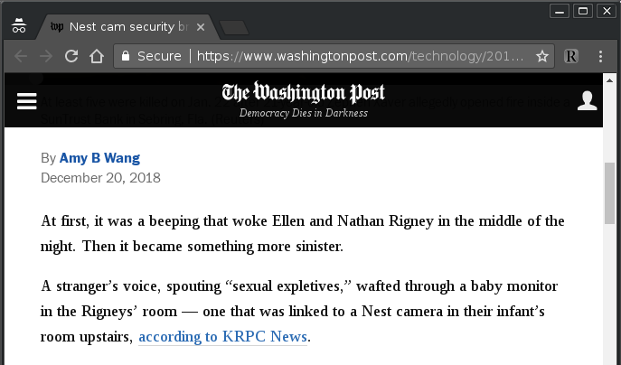
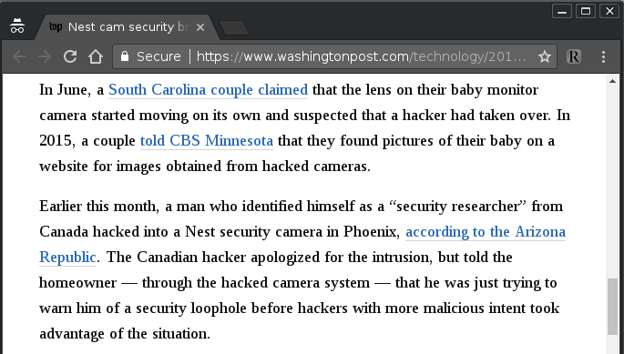
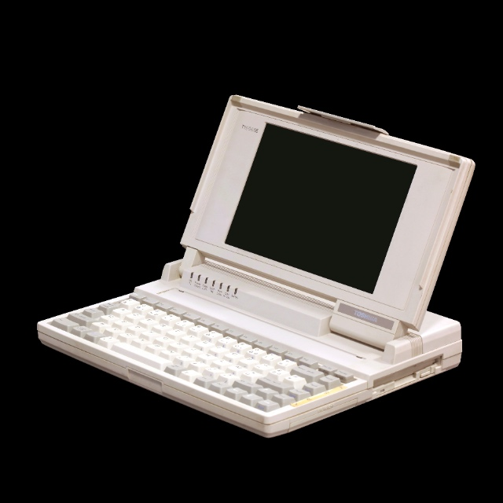
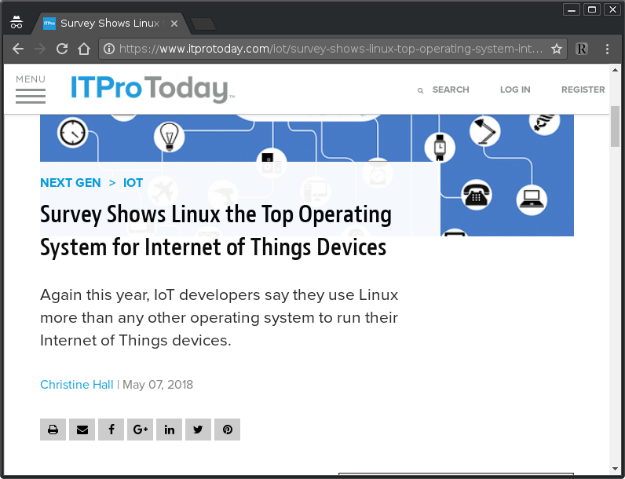
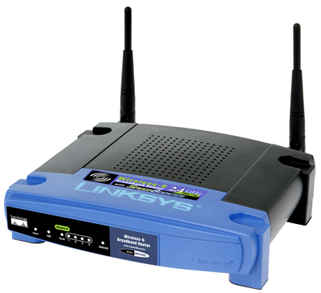
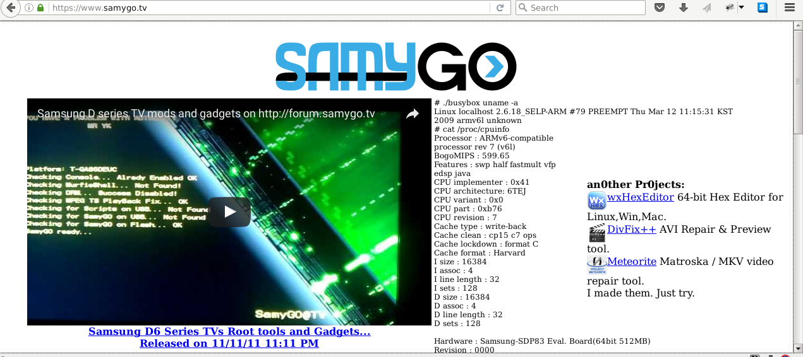
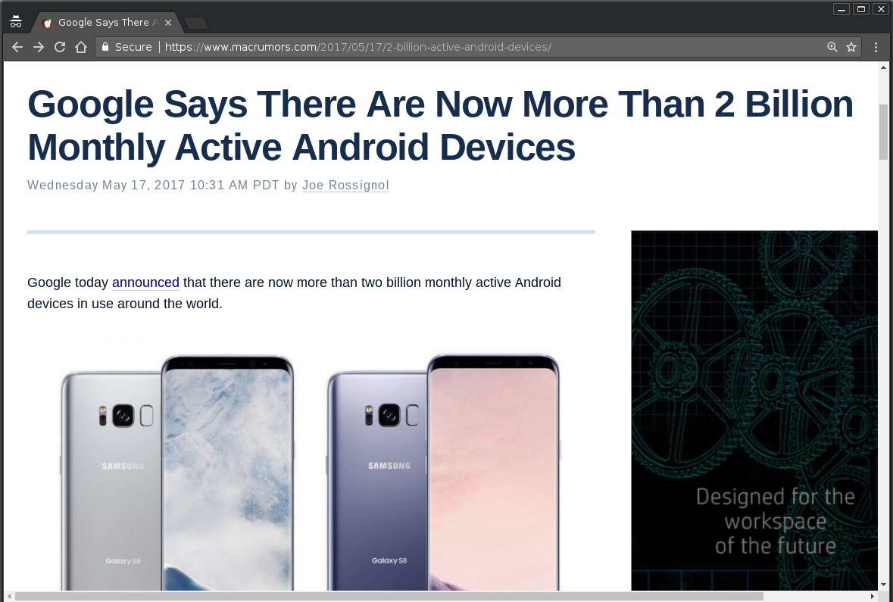

Preventing the IoT Dystopia with Copyleft
Bradley M. Kuhn
LCA 2019
Friday 25 January 2019
The Theme of the Conference
As a regular attendee, I love when conferences pick themes.
It forces me not to propose the same talk everywhere.
The Theme of the Conference
I promise at least 51% of this talk is “new content”.
Hey, for a guy who strives to stay “on message” as much as I can, “slim majority new content” really the best I can do.
Talk Thesis
I seek to convince you the first step toward mitigating the many of the dangers of IoT (Internet of Things) start with a regularly and fairly enforced copyleft license.
Consensus that IoT is Dangerous
The joke of this conference… which I've seen told in at least three other talks:
The S in IoT stands for security.
A few reminders
A few reminders
A few reminders
So?
As good as technical communities are at identifying problems, we too often fail to take measure to solve them.
Linux, historically, was the ultimate counter-example.
The Campus Luggable
My 1992 laptop (from Sager) looked very much like this …
Linux for Hobbyists by Hobbyists
& I had all source code of installed software, and ability to recompile my patches and test them. & I did.
Why Is Linux on your Laptop?
The hobbyist culture brought Linux to the laptop.
Why Is Linux on your Laptop?
Specifically, the hobbyist culture brought Linux to the laptop in spite of, not through the manufactures.
Who Put Linux on your Laptop?
Did your laptop come with Linux?
Have you tried to buy a laptop with Linux preinstalled lately?
It's only slightly easier than it was in 1992.
What Devices Have Linux Preinstalled?
So, if laptops rarely have Linux pre-installed, where is Linux most commonly preinstalled?
Got Linux?
No Reinstalls
While some people do install alternative firmwares,
few people do, or, more importantly, even can.
The Right To Install Modified Versions
You may copy and distribute the Program (or a work based on it, under § 2) in object code or executable form under the terms of § 1 & 2 above provided that you … [a]ccompany it with the complete corresponding machine-readable source code … The source code for a work means the preferred form of the work for making modifications to it. For an executable work, complete source code means all the source code for all modules it contains, plus any associated interface definition files, plus the scripts used to control compilation and installation of the executable.
— GPLv2§3
When IoT Was Young
GPL Enforcement Yielded OpenWRT

Is OpenWRT a Unicorn?
For many years, no other product line of IoT devices had a serious alternative firmware project.
The BusyBox Lawsuits
Before IoT was even a term, the goal of BusyBox enforcement was about downstream users with would-be IoT devices!
At least for one model of Samsung's TV's, we yielded a rebuildable release.
SamyGo: an alternative firmware?
GPL Enforcement Is About This
You may copy and distribute the Program (or a work based on it, under § 2) in object code or executable form under the terms of § 1 & 2 above provided that you … [a]ccompany it with the complete corresponding machine-readable source code … The source code for a work means the preferred form of the work for making modifications to it. For an executable work, complete source code means all the source code for all modules it contains, plus any associated interface definition files, plus the scripts used to control compilation and installation of the executable.
— GPLv2§3
Who Does Upstream Serve?
Linux upstream is too often focused on the big corporate users.
Multiple key member of the Linux leadership once said to
me: All I want from the GPL is their best .c files; I don't care if it
builds or installs
.
Garrett: It's About Downstream Users Who Become Developers
[D]o you want 4 more enterprise clustering filesystems, or another complete rewrite of the page allocator for a 3% performance improvement under a specific database workload, or do you want a bunch of teenagers who grow up hacking this stuff because it's what powers every device they own? Because honestly I think it's the latter that's helped get you [Linux developers] where you are now, and they're not going to be there if the thing that matters to you most is making sure that large companies don't feel threatened rather than making sure that the next 19 year old in a dorm room can actually hack the code on their phone and build something better as a result. It's what brought me here in the first place, and I'm hardly the only one.— Matthew Garrett, Linux Developer, 26 August 2016
Copyleft is About Users
Matthew is right: the hobbyist firmware modifier and the would-be developer really do matter most.
Would we even have any new upstream developers if the only place you can reinstall Linux yourself is in a big data center or in a Cloud host?
We may have won the DIY battle on the laptop, but we're losing it on IoT!
Linux is Important
There is no doubt in my mind that Linux is the most important GPL'd program in history.
It was successful because users could install it on their own devices.
Linux cannot remain the most important GPL'd program if users can't install their modifications.
Tinkering is what makes software freedom succeed.
The Need For Downstream
Upstream matters, of course, but downstream matters more.
There may be thousands of Linux upstream developers now, but…
2 Billion Android Devices!
Downstream & Upstream Won't Agree 100%
Linux upstream is important to us; they're our friends and colleagues.
A silent plurality and a loud minority agree about the importance of software freedom for the individual downstream user.
& the upstream developers have kindly licensed their code in a manner that does assure our software freedom.
We just need to take advantage of the opportunity.
Freedom Isn't Free as In Price
No, we don't need to fight a revolution to liberate IoT devices…
… because the words are there, right in the GPL, that assures us the ability to reinstall and modify the base operating system of all our firmwares.
We just need to take it.
What You Can Do
Request Linux sources on every device you own.
Try to build and install them; if you can't, ask a friend or ask Conservancy to help.
If it doesn't build/install, it's a GPL violation; report it to Conservancy (<compliance@sfconservancy.org>).
Step up as a leader of a project for devices that matter to you.
Why This Will Work
The problem seems insurmountable now, only because we've been led astray.
The right to upgrade IoT devices is guaranteed to you as a Linux licensee, by the license that upstream Linux gave you.
You just have to exercise your rights.
Why This Will Work
Rebuilding and reinstalling Linux on IoT device is the first and absolutely necessary step toward privacy and security on those devices.
When the user controls the operating system again, the balance of power will be restored.
More Info / Talk License

URLs / Social Networking / Email:
- Pls. support Conservancy
- The Copyleft Guide is available & welcomes contributions at copyleft.org
- If you're a Linux developer, you can join the GPL enforcement coalition of Linux developers. (Ask me or Karen about it.)
- Conservancy: sfconservancy.org & @conservancy.
Presentation and slides are: Copyright © 2017, 2018, 2019 Bradley M. Kuhn, and are licensed under the Creative Commons Attribution-Share Alike 4.0 International License. Slide Source available
Some images included herein are ©’ed by others. I believe my use of those images is fair use under USA © law. However, I suggest you remove such images if you redistribute these slides under CC-By-SA 4.0.